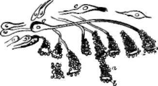
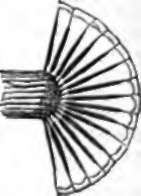

174. The Eye
Description
This section is from the book "Animal Physiology: The Structure And Functions Of The Human Body", by John Cleland. Also available from Amazon: Animal Physiology, the Structure and Functions of the Human Body.
174. The Eye
The Eye may be likened to a camera obscura, such as that which is used in photography. In front are the refractive media by which the inverted image is produced, while, behind, the retina receives that image precisely as the ground glass or the sensitive plate in the artist's camera receives, when the focus is rightly adjusted, the picture of the object to be photographed.
It must not, however, be supposed that the eyes of all animals have the complexity of the eyes of vertebrate animals, nor that vision is a sense enjoyed in perfection by all animals possessed of eyes. The simplest forms of eyes met with, or of structures which may be taken for eyes, are little more than spots of colour; but even if we keep all doubtful structures out of view, eyes must be divided into those which are capable of receiving an image of the landscape and those which are not. A scallop (Pecten) is provided with numerous eyes, disposed like a double row of jewels, but it cannot distinguish objects. Neither can the starfish do so, although it has a group of eyes at the tip of every arm. In each of these eyes there is a dense transparent structure or lens in front, with nerve-terminations behind it, and bright pigment round about: of the light entering the lens, no doubt the rays corresponding in colour with the pigment are reflected from point to point, and a sensation must thus be produced varying in intensity with the amount of that particular colour of light; but it can scarcely be supposed that any nearer approach to vision is made.
* For this reason I object to considering the hexagonal pigment cells as belonging to the retina, as is done by Max Schultze, who has done so much to elucidate retinal structures.
Fig. 120. Ocelli or Starfish (solaster papposa). a, Pigment-cone; b, lens; c,c, nerve-corpuscles. H. S. Wilson.
Fig. 121. Diagram of Insect's Eye in section.
Eyes which receive an image are divisible into two great groups, those in which the image is erect, and these in which it is inverted. To the first of these groups belong the eyes of insects and of crustaceans, such as lobsters; while to the second group belong the eyes of ver-tebrata and cuttlefishes. If the eye of a lobster or a dragon-fly be carefully examined, it will be seen to consist of numbers of minute facets, barely visible, crowded together; each of these is a transparent structure placed at the extremity of a long tube lined with black pigment, and with a nerve-termination at its deep extremity. Obviously no ray of light can reach the bottom of such a tube unless it fall vertically into it. Thus the point in the landscape vertically opposite each tube affects the nerve at its extremity, and a separate sensation is produced by as many points as there are facets in the eyes, and this will happen irrespective of the distances of objects.
In eyes which invert the image, the inversion is produced by the addition of lens and camera, which are probably necessitated by the enormous increase in number of the sensitive points; for every rod or cone of the bacillary layer is a separate nerve-termination. In the eye of the cuttlefish, the bacillary layer is the part of the retina turned towards the lens, and is, probably, like the lens, a development of the cuticle; but in the vertebrate eye, we have seen that it is the part of the retina lying against the choroid, and is a development of the brain.
175. If the analogy of nerve-terminations in other organs be attended to, it will be at once perceived that those of the retina are the rods and cones of the bacillary layer ; and a variety of other considerations show that they really are so. One might naturally expect that the surface of the retina which is turned towards the light, would be the one to be affected by the rays impinging on it; but this is not the case. For the part next the fight is the layer of ramifying fibres of the optic nerve, and the spot where those fibres are most numerous is the optic pore, which happens to be wholly insensible to light.
This insensibility of the optic pore can be easily proved. The axis of the eye is always directed to the object looked at; in that axis lies the yellow spot, and to its inner side is the optic pore, receiving the rays entering from a point external to the object looked at. If, now, the left eye be shut, and the right eye fixed on the cross here represented, while the book is slowly moved towards and away from the eye, at a certain distance the round mark to the right will suddenly disappear, to come again into view, as the book is brought nearer or held further off. The same result is obtained, if the experiment be made with white spots on a dark ground, or with colours; and the explanation obviously is that, at a certain distance, the round mark falls on a spot, internal to the axis, which is insensible to the presence or absence of light.
This experiment also shows the importance of the yellow spot as the seat of clear vision, that spot from which the fibres of the optic nerve are absent, and in which the rods of the bacillary layer are entirely replaced by the more highly organized cones. It will be noticed that when the eye is fixed on the cross, not only is that mark the most distinctly visible object, but letters as far away from it as the position of the round ball, although still a long distance removed from the circumference of the field of vision, are so vaguely seen that they cannot be distinguished when the ball is hid from view, even though the figure is so arranged that this happens when the book is held at a good focal distance. But the optic pore, it will be recollected, is only one-tenth of an inch from the axis of the eye, therefore this observation shows that the retina, at the circumference of a circle with a radius of a tenth of an inch, and the axis of the eye as its centre, has much less acute sensibility than the yellow spot. And inasmuch as there is no interruption of the outline of the field of vision corresponding to the position of the optic pore, but the place where such an interruption might be expected to show itself is filled up with the appearance round about, whether light, dark, or coloured, there is evidence that the sensation originating in each cone or rod is not strictly limited; although in other parts of the retina it is practically limited by the sensations from the rods round about. This explains the spreading of the appearance of light round excessively luminous objects.
Continue to: